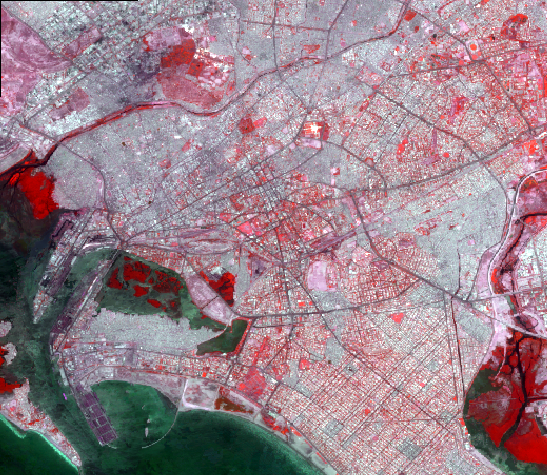
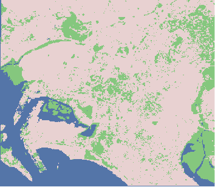
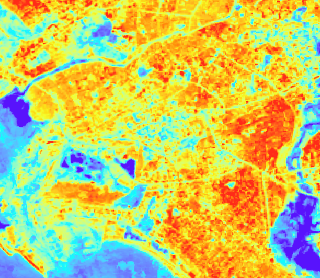

Land Use Classification Models
This is an example of a landuse map I created of my home-town Karachi, Pakistan. Being an increasingly urbanizing city, Karachi has had depleting amounts of vegetation present witin its urban centers. Within this map, this is increasingly prominent. Through a false-colour composite created using spectral data, we can see the vegetation present within the city highlight by bright read. Meanwhile, urban areas are simply white.
This lack of vegetation is prominent throught a further supervised learning algorithm, which classified the presence of vegetation is a bright green and urban areas in a light beige. Similarly, we can see this through the NDVI spectral data analysis of Karachi seen below. Notice how the spectral identity for most of the city is relatively the same due to the high presence of construction material present and a lack of vegetation other than spare mangroves.
